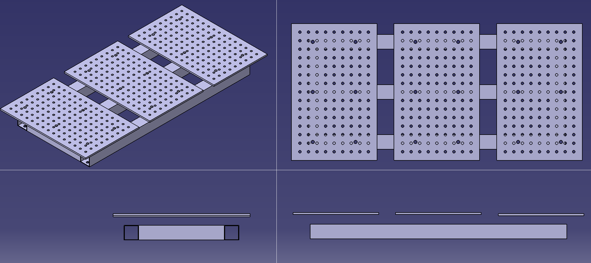

Ergebnis – Gewählte Platte
800×500×12mm · 000-005-013-2
D16System 16, Raster 100×100 mm
3Stück nebeneinander (Ausgangsplanung)
Produkt: Lochplatte D16 | 12 mm – flexible Spannbasis für modulare Schweißtische im System 16 mit 100×100 Raster.
Marktrecherche – Lochplatte suchen
| Variante | Loch-Ø | Raster | Dicke | Maße | Preis / Info |
|---|---|---|---|---|---|
| Schweißtisch24 – Bausatz mobil | D16 | 50 × 50 | 6 mm | 800 × 400 × 50 | Bausatz für unterwegs |
| WELDINGER (hausundwerkstatt24) | D16 | 50 × 50 | 6 mm | 800 × 400 × 50 | 199,99 € · Stahl S355 · 23 kg |
| hot-tabledance – Lochplatte D16 | D16 | 50 × 50 | 8 mm | – | kostenloser Versand |
| ✅ hot-tabledance – System 16 | D16 | 100 × 100 | 12 mm | 800 × 500 | GEWÄHLT · modulares Spannsystem |
Auswahlkriterium: 12 mm Plattenstärke = höhere Steifigkeit & Verzugsfestigkeit beim
Schweißen. 100 × 100 Raster = weniger Bohrungen, stabilere Platte, Standard im
modularen System 16.
Auf dem Tisch ansehen
Drei Lochplatten auf dem Schweißtisch-Rahmen

Isometrie, Draufsicht und Seitenansichten der modellierten Lochplatte 800 × 500 × 12 mm, platziert auf dem Tisch.
Anordnung der Arbeitsplatten – 2 Varianten
Drei Platten werden nebeneinander platziert. Dabei gibt es zwei Konfigurationen:
🅰️ Variante A – mit Zwischenabstand
✔ Maximale Vergrößerung der Gesamtarbeitsfläche. ✘ Erhöhte Verschmutzung – Schweißreste fallen auf den Boden.
🅱️ Variante B – auf Stoß (lückenlos)
✔ Sauberer Arbeitsbereich – Schweißreste bleiben auf den Platten. ✘ Geringere nutzbare Gesamtlänge der Arbeitsfläche.
Erkanntes Problem – Verschraubung
Nachteil der Schrauben: Die Schraubenköpfe stehen über und stören die
Arbeitsfläche → Werkstücke liegen nicht plan auf.
Lösungsansatz: Senkschrauben / versenkte Befestigung oder Verschraubung von unten prüfen. Drei konkrete Lösungsmethoden werden auf der nächsten Seite durchgespielt.